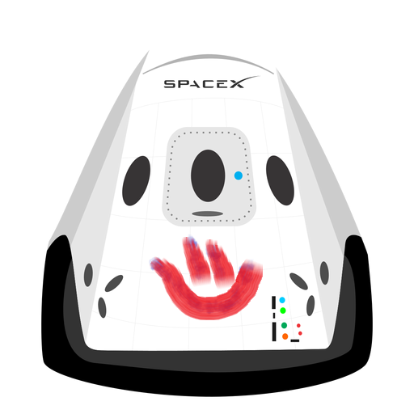

Hiperblog
Tu blog de confianza
Este el título atractivo e interesante del post
Y este es el párrafo de inicio donde vamos a explicar las cosas increíbles que se pueden hacer con ramas
Imagen de equipo Platzi (.gitignore, solo ve en local, no sube al repo)

Imagen de equipo Platzi (desde Imgur - imagen en un portal)

Los blogs son la mejor forma de compartir información y tus ideas. mucho mas que ir a conferencias o salir en YouTube. Excepto si eres un rockstar. Pero estadísticamente no lo eres... por ahora.
Suscribite y dale like